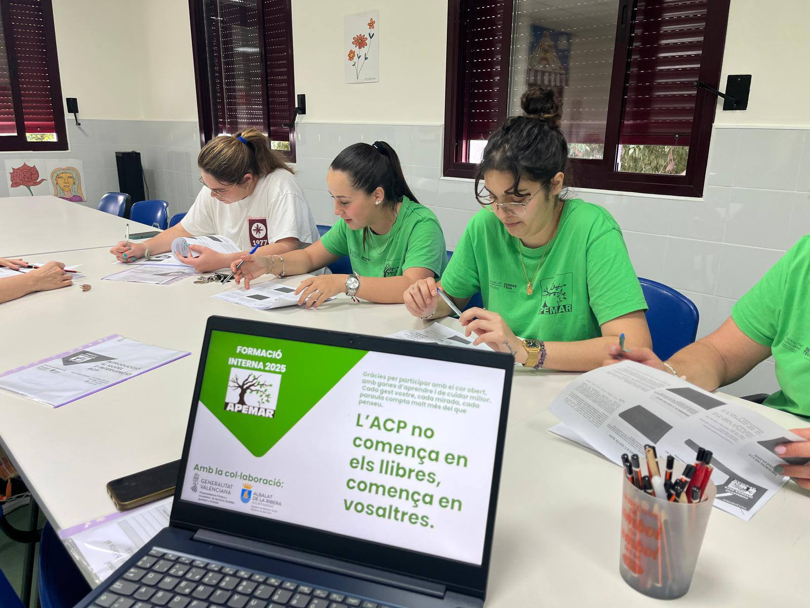
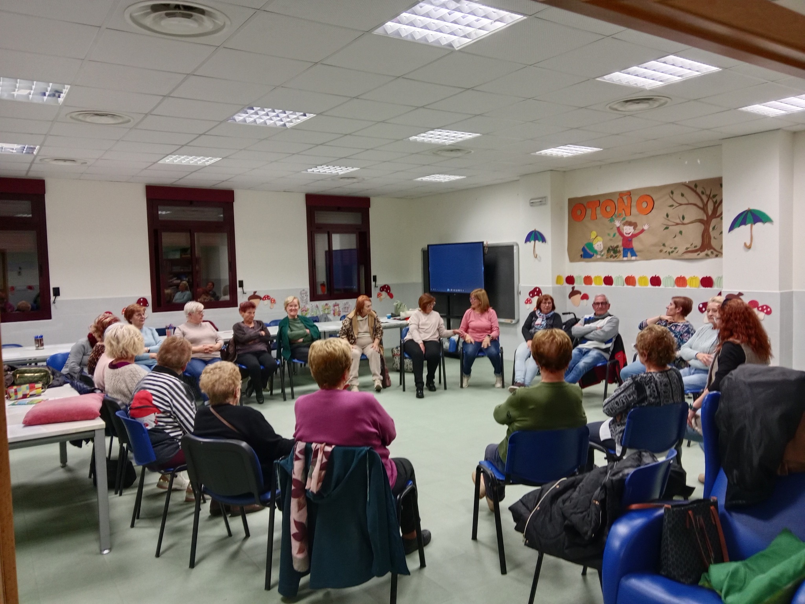
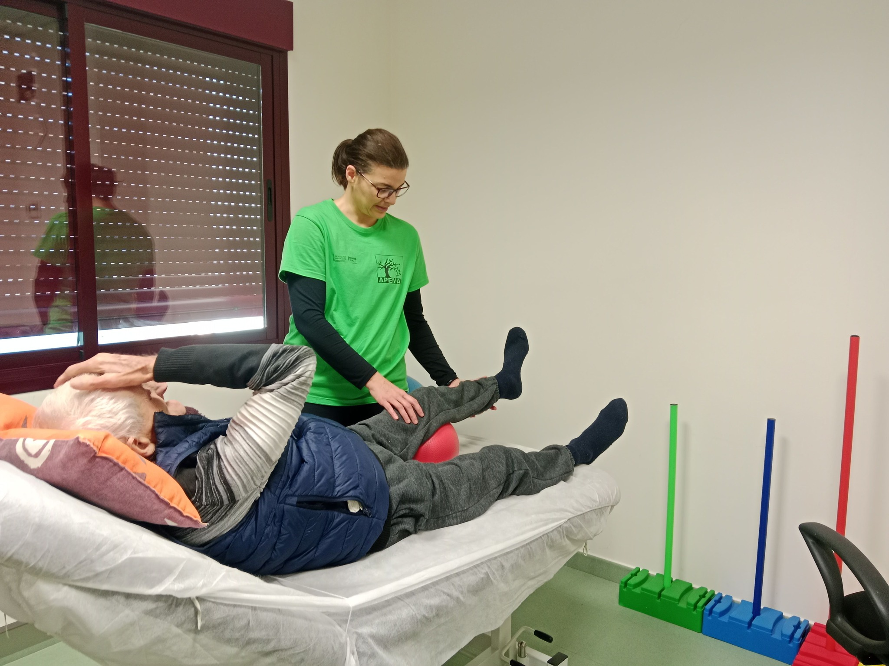
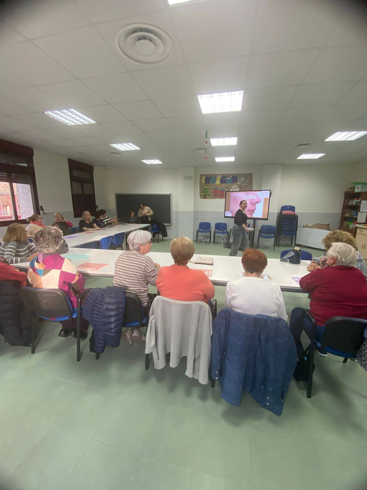
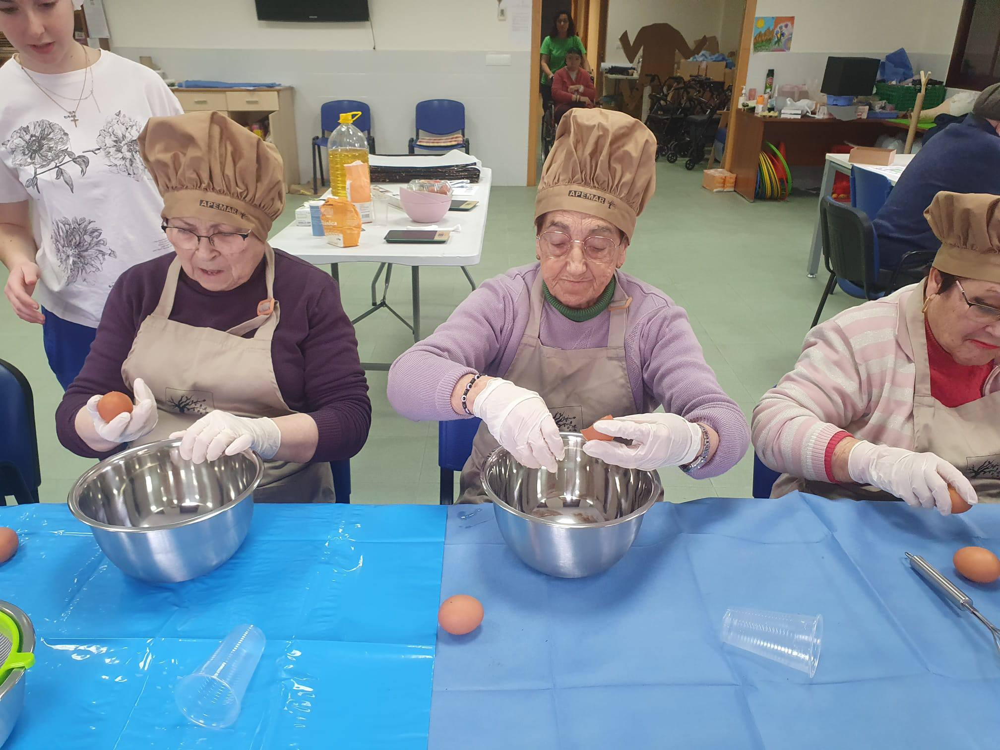
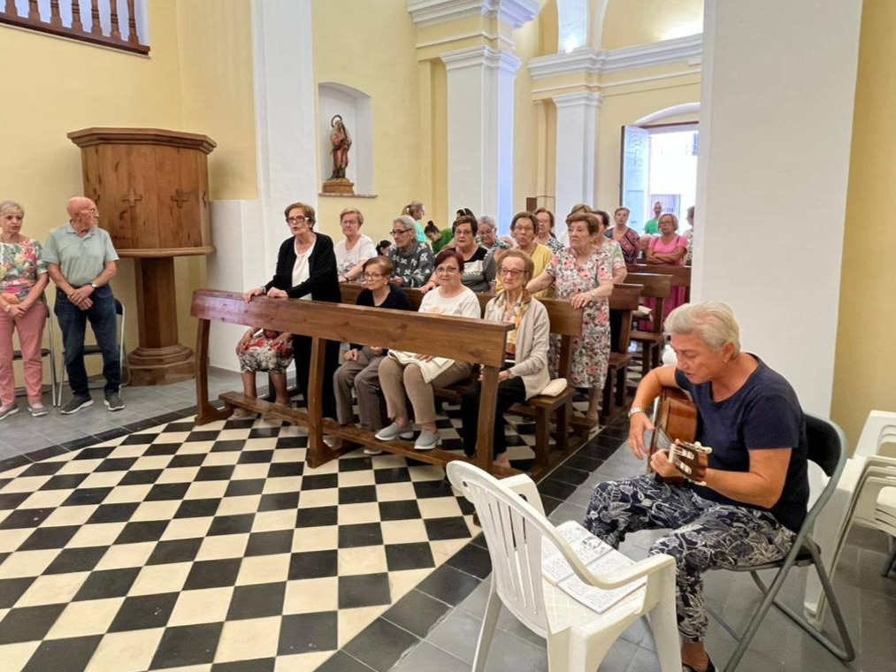
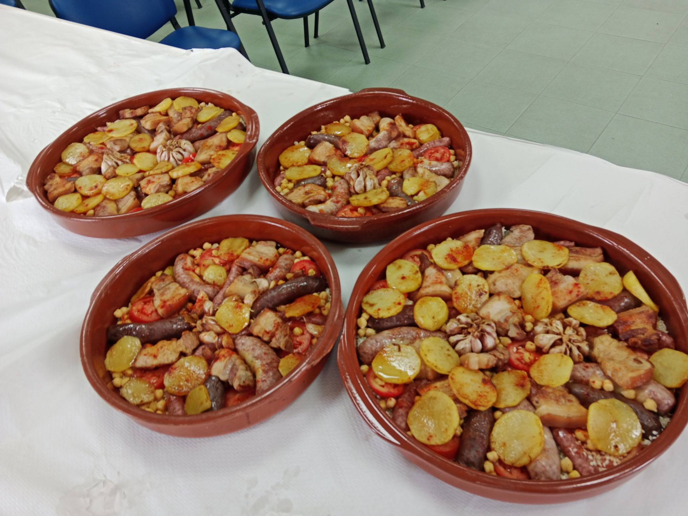
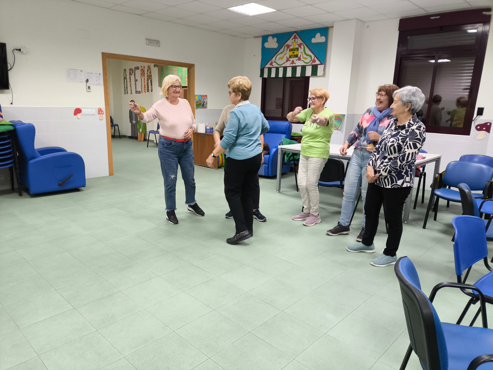

El que oferim
Els Nostres Serveis Especialitzats
Programa d'atenció integral amb 9 àrees especialitzades per a persones en situació de dependència i les seues famílies

Adaptació i Acollida
Facilitem una adaptació progressiva i positiva amb plans individualitzats, coordinació familiar i seguiment personalitzat.
Llegir més →
Àrea Emocional i Psicològica
Suport emocional individual, sessions de reminiscència, activitats grupals i seguiment del benestar psicològic.
Llegir més →
Àrea Cognitiva i Estimulació
Tallers diaris d'estimulació cognitiva, exercicis de memòria, atenció, llenguatge i orientació a la realitat.
Llegir més →
Àrea Física i Funcional
Gimnàstica suau diària, entrenament de mobilitat, exercicis d'equilibri i prevenció de caigudes amb supervisió constant.
Llegir més →
Àrea d'Higiene i Cura Personal
Suport respectuós en higiene diària, preservació de la intimitat, foment de l'autonomia i cura de la imatge personal.
Llegir més →
Àrea Social i Relacional
Activitats grupals, celebracions, tallers socials, voluntariat i foment de relacions interpersonals positives.
Llegir més →
Àrea Lúdica i Ocupacional
Tallers de música, manualitats, jardineria, cuina, jocs de taula i activitats basades en interessos personals.
Llegir més →
Àrea Espiritual i Valors
Accés a pràctiques religioses, espais de meditació, respecte a creences personals i acompanyament en moments de dol.
Llegir més →
Àrea d'Alimentació i Nutrició
Dietes adaptades, control nutricional, supervisió de la deglució i coordinació d'hàbits alimentaris amb la família.
Llegir més →
Envelliment Actiu
Tallers i activitats per a persones que desitjen mantindre's actives, saludables i socialment connectades.
Llegir més →
El Nostre Dia a Dia
Una ullada a les activitats i moments especials a APEMAR